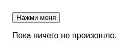

CSS: оформление и расположение элементов веб-страницы
CSS определяет внешний вид и расположение элементов HTML-документа.
CSS (Cascading Style Sheets — каскадные таблицы стилей) — язык таблиц стилей, предназначенный для описания внешнего вида и расположения элементов документа, написанного на HTML или другом языке разметки. С помощью CSS задают цвета, шрифты, размеры, отступы, рамки, расположение элементов и адаптацию страницы к разным размерам экрана.
HTML задаёт структуру документа, а CSS определяет, как эта структура отображается на экране: без собственных стилей браузер применяет стандартное оформление — обычный шрифт, чёрный текст, минимальные отступы. CSS выбирает элементы страницы и задаёт им свойства:
body {
font-family: sans-serif;
background: #f7f7fb;
color: #1a1a2e;
}
h1 {
color: #4a2fbd;
}
p {
line-height: 1.6;
}Каждое правило CSS — это селектор (какие элементы выбирает правило: по
тегу, классу или идентификатору) и фигурные скобки с парами свойство: значение. Подключить
CSS-файл к HTML-странице можно одной строкой внутри
<head>:
<link rel="stylesheet" href="stili.css">
Классы — стилизуем не все теги подряд
Селектор по тегу (p { }) красит все абзацы разом. Чтобы
выделить только некоторые элементы, им дают атрибут class, а в
CSS обращаются к нему через точку:
<p class="preduprezhdenie">Осторожно, ступенька!</p>.preduprezhdenie {
color: #b3261e;
font-weight: 700;
}font-family) элемент по умолчанию перенимает от родителя, если для него самого явно ничего не задано.Блочная модель
У каждого элемента есть содержимое, а вокруг него — отступ внутри рамки
(padding), сама рамка (border) и
отступ снаружи, до соседних элементов (margin):
.kartochka {
padding: 16px;
border: 1px solid #ccc;
margin: 12px;
}Расположение элементов: display и flexbox
Свойство display определяет, ведёт ли себя элемент как блок
на всю ширину (block, как <p>
и <div>) или как часть строки
(inline, как <a> и
<span>). Чтобы выстроить несколько элементов в ряд с
равными промежутками, чаще всего используют flexbox:
.panel {
display: flex;
gap: 12px;
align-items: center;
}Адаптивная вёрстка: одна страница, разные экраны
Медиа-запрос (media query) применяет часть правил только при определённых условиях — например, только на узких экранах:
@media (max-width: 480px) {
.panel {
flex-direction: column;
}
}Так одна и та же страница может выстраивать элементы в ряд на широком экране и столбиком — на узком, без отдельного мобильного сайта. Итоговый проект главы (раздел 22.35) использует именно этот приём.
Официальная документация: MDN — CSS.